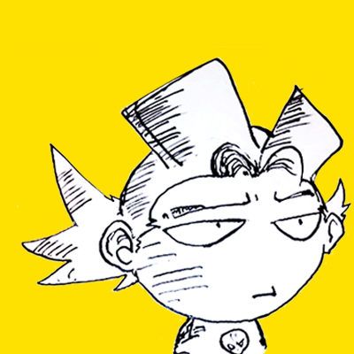

Raúl Rodriguez

Sumary
I would like to continue advancing in the development of interfaces
and games, I really enjoy constantly learning new media.
Education
- Communication Sciences,Bachelor's degree with an emphasis in advertising.
- Universidad Cátolica (2006-2012)
Work Experience
-
VIDEO EDITION AND POST PRODUCTION - Foqus Digital
2008- 2012
- Internship and then permanent editing commercials.
- skirting boards.
- coloring of animatics.
- script of commercials and video clips.
-
ILUSTRATOR AND VIDEO EDITOR - Freelance
2012- 2016
- Illustration and video editing for institutional materials.
-
SENIOR WEB DESIGNER - Linco S.A.
2016- 2023
- Project scope.
- Wireframes and site architecture.
- Visual Design.
- Site development.
-
Digital Designer - Autentic Sign
May 2022 - November 2022
- Design of posts for social networks.
- materials for clients on the platform.
- Redesign of the website.
Education
- Illustrator:⭐⭐⭐⭐⭐
- Photoshop:⭐⭐⭐
- Figma:⭐⭐⭐⭐⭐
- Blender:⭐⭐⭐⭐
Certification
- Foundations of User Experience (UX) Design - Coursera Course Certificates (September 2021)
Other